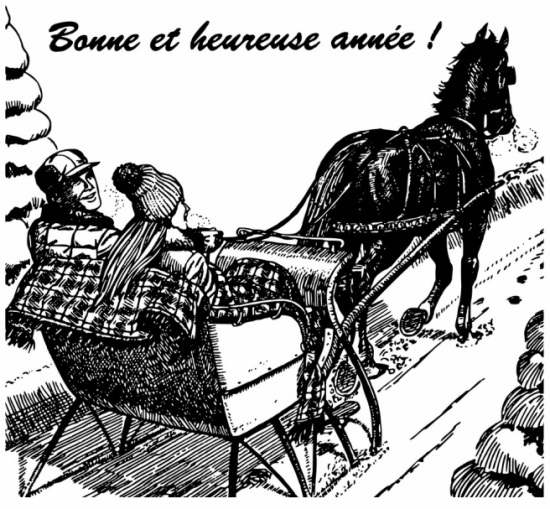

Paroisse Saint-Paul de Senneterre Feuillet paroissial du 23 décembre 2024 au 5 janvier 2025

Le conseil de la Fabrique paroisse Saint-Paul remercie tous ceux et celles qui ont fait preuve de générosité et de solidarité durant la dernière année. Votre soutien est indispensable pour que nous puissions continuer d’offrir des services à la communauté.
Nous souhaitons à tous les paroissiens et paroissiennes des Fêtes merveilleuses, avec la famille et les amis.
Que l’année 2025 vous apporte à tous :
Santé ! Paix ! Bonheur !
Cession de l’église St-Paul de Senneterre
À partir du 28 novembre 2024, l’église de la Paroisse Saint Paul de Senneterre a été cédée à la ville de Senneterre moyennant une entente du maintien de tous les services du culte. Même si le bâtiment sera utilisé par les deux partis, les paroissiennes et paroissiens continueront à bénéficier de tous les services comme d’habitude selon l’entente signée. Pour plus de précisions, contacter le bureau au 819-737-2045,
Congé des Fêtes
Veuillez prendre note que le bureau du secrétariat de la Fabrique sera fermé du 24 décembre au 5 janvier.
Heures d’ouverture du secrétariat
Lundi, mercredi et vendredi : 9h30 à 13h00
Revenus du 2 au 15 déc.
Quêtes
459,85
Prions en Église
31,25
Lampions
59,50
Capitation
400,44
Vente de pâtisseries
623,00
Tirage du faitout 6L
107,00
Agenda liturgique du 22 décembre 2024 au 5 janvier 2025
Dim 22
9h30
Messe à La Morandière
11h00
Messe à Barraute
16h00
Messe :
Armand et André BrousseauLise Fillion Thérèse Raymond BeauvaisCollecte au service
Lun 23
15h00
Messe :
Ghislaine BoulianneGilbert
Mar 24
Messe de Noël
16h00
Messe à Lebel-sur-Quévillon
19h00
Messe :
Parents défunts famille RoussilSylvie et Nicole Roussil M. et Mme LeBouthillierLeur fille Gérard LafontaineGisèle
21h00
Messe à Barraute
Mer 25
Noël
11h00
Messe à La Morandière
Jeu 26
Congé de l’abbé Laurent
Ven 27
Pas de messe aujourd’hui (Rencontre des prêtres à Amos)
Sam 28
Pas de messe aujourd’hui
Dim 29
10h30
Messe à Lebel-sur-Quévillon
16h00
Messe :
Louis-Marie et Hélène MartinFrançoise et leurs petits-enfants Lydia Flamand Labbé et famille défunts
Lun 30
15h00
Messe :
M. et Mme Philippe BélisleLeur fils Christian
Mar 31
19h00
Messe du Jour de l’An à Barraute
Mer 1
Jour de l’An
16h00
Messe :
Défunts famille Leroux et BlouinÉmilienne et la famille Parents défunts famille RoussilSylvie et Nicole Roussil